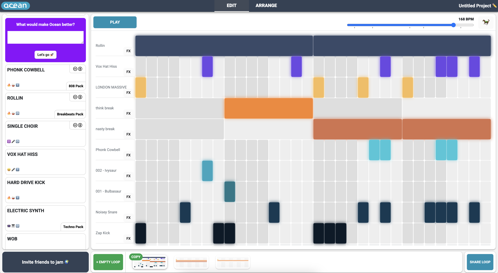

Ocean is a collaborative online music-making platform that I have been developing over the past several years. It started as my postgraduate research into interaction design / technical architecture for web-based creative collaboration. Since then, I have personally engineered and continuously refined the codebase adding new features as i go.
The platform is designed to make music creation accessible for beginners. It enables users to drag and drop sounds, sequence beats, and instantly share their work, playing directly to the web's strengths of shareability and rapid cybernetic loop of idea - post - feedback.
Ocean has grown over the years to 30,000~ users worldwide. Checking the site and seeing new people use Ocean for a moment of self-expression is always a nice start to the morning.
Looking ahead, I am exploring how to gamify the experience and, more significantly, how to integrate AI-powered tooling. My focus is on leveraging generative models to introduce sophisticated musical elements, like harmony, and to explore AI-driven audio generation. This work is aimed at building custom pipelines that can unlock new creative possibilities and produce novel expressions, pushing the technical and creative boundaries of the platform.
A few years ago now I spoke to Music Hackspace about this project, check out the video below. (ignore my lockdown haircut)